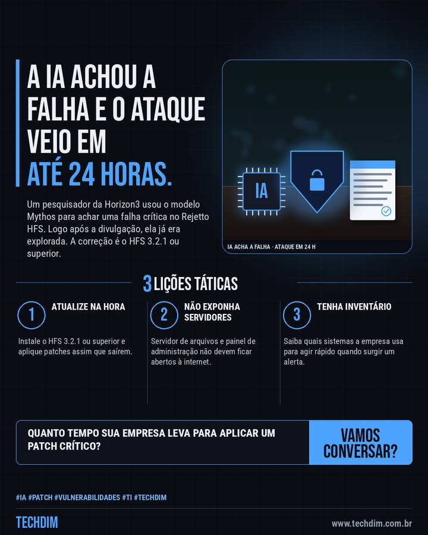

Notícia de tecnologia
IA achou falha em servidor de arquivos e ela foi explorada em até 24 horas
Um pesquisador da Horizon3 usou o modelo Mythos para achar uma falha crítica no Rejetto HFS. Logo após a divulgação, ela já era explorada. A correção é o HFS 3.2.1 ou superior.

Em resumo
- O modelo Mythos, da Anthropic, ajudou um pesquisador da Horizon3 a achar a CVE-2026-61500, falha crítica no Rejetto HFS que dá acesso de administrador
- A causa é uma chave de sessão gerada com Math.random(), que é previsível; segundo o relato, a falha foi explorada em até 24 horas após a divulgação
- A correção está no HFS 3.2.1 ou superior. O prazo entre aviso e ataque encolheu: atualize rápido e não deixe servidores expostos à internet
Quando a IA acelera quem procura falhas, o prazo para atualizar encolhe. A TECHDIM mantém seus sistemas em dia.
Por que importa
Mostra na prática que o tempo entre a divulgação e o ataque está curto e que servidores expostos precisam de atualização rápida.
O que fazer na prática
- Atualize na hora. Instale o HFS 3.2.1 ou superior e aplique patches assim que saírem.
- Não exponha servidores. Servidor de arquivos e painel de administração não devem ficar abertos à internet.
- Tenha inventário. Saiba quais sistemas a empresa usa para agir rápido quando surgir um alerta.
Fontes consultadas
Mais do Radar de hoje
Leia também
Este texto resume as fontes citadas na data de publicação. Confira sempre o aviso oficial do fabricante antes de agir em produção.